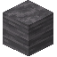
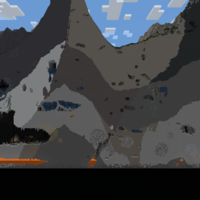

地质学群峦传说的世界被划分为几个巨大的大陆——这些陆地宽达数千米，并被海洋分隔开来。在这些大陆上，你可以找到山脉、河流以及许多其他地貌环境。

从宏观尺度观察的典型群峦传说世界。
岩层
这个世界也是由不同类型的岩石构成的。一块同质的岩石区域有时会广达一公里，且根据深度的不同，会有其他两到三种不同的岩石构成分明的岩石层。不同的岩石类型中包含了不同的矿石，且大部分矿石只会出现在特定的岩石类型中。若想找到它们，就必须先找到正确的岩石类型。

群峦传说世界的剖面图。
海底
海底由喷出岩构成——这类岩石由岩浆迅速冷却形成。喷出岩之下通常会出现相同等级的侵入岩。
例如，玄武岩（一种镁铁质喷出岩）下方很可能就是辉长岩（一种镁铁质侵入岩）。
火成岩等级
大陆顶部的岩石层要么是喷出岩，要么是沉积岩。沉积岩之下通常会出现其上层岩石的变质形态。
例如，大理岩（一种变质岩）通常出现在石灰岩或白垩岩之下。高级变质岩则位于其他变质岩或火成岩的深处。
变质岩
- 板岩和千枚岩形成于页岩、黏土岩和砾岩之下。
- 大理岩形成于石灰岩、白云岩和白垩岩之下。
- 石英岩形成于燧石岩之下。
- 片岩和片麻岩形成于板岩和千枚岩之下，或火成侵入岩之中。
隆升区域
最后，在山脉地区，你可能还会看到隆升现象，即变质岩或火成侵入岩出现在地表。隆升岩层可以位于其他变质岩之上。
此外，岩墙——火成侵入岩的小型垂直切片——也可能零星分布在世界各地。
它们穿透上层岩石而出。
综上所述，接下来的几页将列出所有四类岩石：沉积岩、变质岩、喷出岩和侵入岩。这些类别决定了岩石的生成位置（参见前几页），也决定了其中可能生成的矿石。
沉积岩
沉积岩是由矿物或有机颗粒的堆积或沉积形成的。它们通常出现在大陆地区的顶部岩层中。包括：
- 页岩
- 黏土岩
- 石灰岩
- 砾岩
- 白云岩
- 燧石岩
- 白垩岩
变质岩
变质岩是由变质作用形成的岩石。它们可以在对应的沉积岩或火成岩之下找到，也可见于隆升区域。包括：
- 石英岩
- 板岩
- 千枚岩
- 片岩
- 片麻岩
- 大理岩
喷出岩
喷出岩是由岩浆在地球表面冷却形成的。它们可以在大陆地区的顶部岩层或海底找到。包括：
- 流纹岩
- 玄武岩
- 安山岩
- 英安岩
侵入岩
侵入岩是由岩浆在地壳下冷却形成的。它们可以在深层地下找到，偶尔也出现在岩墙或隆升区域。包括：
- 花岗岩
- 闪长岩
- 辉长岩